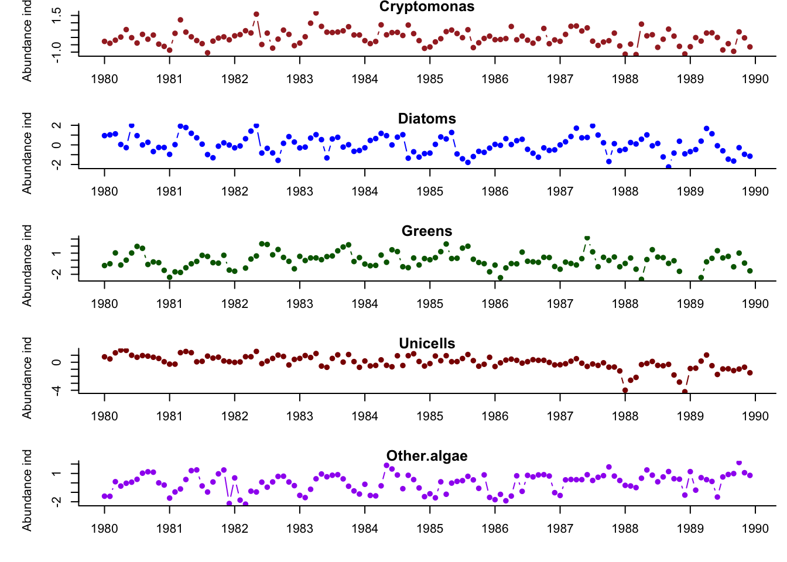

ℹ Google's Terms of Service: <https://mapsplatform.google.com>
Stadia Maps' Terms of Service: <https://stadiamaps.com/terms-of-service/>
OpenStreetMap's Tile Usage Policy: <https://operations.osmfoundation.org/policies/tiles/>
ℹ Please cite ggmap if you use it! Use `citation("ggmap")` for details.
Loading required package: grid
Loading required package: gridExtra
Attaching package: 'gridExtra'
The following object is masked from 'package:dplyr':
combine
Loading required package: Hmisc
Attaching package: 'Hmisc'
The following objects are masked from 'package:dplyr':
src, summarize
The following objects are masked from 'package:base':
format.pval, units
Loading required package: kableExtra
Attaching package: 'kableExtra'
The following object is masked from 'package:dplyr':
group_rows
Loading required package: knitr
Loading required package: loo
This is loo version 2.8.0
- Online documentation and vignettes at mc-stan.org/loo
- As of v2.0.0 loo defaults to 1 core but we recommend using as many as possible. Use the 'cores' argument or set options(mc.cores = NUM_CORES) for an entire session.
Attaching package: 'loo'
The following object is masked from 'package:fma':
milk
Loading required package: magrittr
Attaching package: 'magrittr'
The following object is masked from 'package:ggmap':
inset
Loading required package: MARSS
Warning: package 'MARSS' was built under R version 4.4.3
Loading required package: quantmod
Loading required package: xts
Loading required package: zoo
Attaching package: 'zoo'
The following objects are masked from 'package:base':
as.Date, as.Date.numeric
######################### Warning from 'xts' package ##########################
# #
# The dplyr lag() function breaks how base R's lag() function is supposed to #
# work, which breaks lag(my_xts). Calls to lag(my_xts) that you type or #
# source() into this session won't work correctly. #
# #
# Use stats::lag() to make sure you're not using dplyr::lag(), or you can add #
# conflictRules('dplyr', exclude = 'lag') to your .Rprofile to stop #
# dplyr from breaking base R's lag() function. #
# #
# Code in packages is not affected. It's protected by R's namespace mechanism #
# Set `options(xts.warn_dplyr_breaks_lag = FALSE)` to suppress this warning. #
# #
###############################################################################
Attaching package: 'xts'
The following objects are masked from 'package:dplyr':
first, last
Loading required package: TTR
Attaching package: 'quantmod'
The following object is masked from 'package:Hmisc':
Lag
Loading required package: RCurl
Loading required package: readr
Loading required package: reshape2
Loading required package: rmarkdown
Loading required package: stringr
Loading required package: tidyr
Attaching package: 'tidyr'
The following object is masked from 'package:reshape2':
smiths
The following object is masked from 'package:RCurl':
complete
The following object is masked from 'package:magrittr':
extract
Loading required package: tseries
Loading required package: urca
library(MARSS)
Data
This lab used a monthly data set of plankton concentrations in Lake Washington from 1962-1994. We had data on 15 different plankton groups, both grazers and primary producers. The data set also contained three covariates:
Environmental dat
Temp: water temperature in degrees C
TP: total phosphorous concentration in mg m-3
pH: pH.
Phytoplankton
Cryptomonas: small brown or green algae (edible)
Diatoms: small algae rich in silica (edible)
Greens: general class of algae (edible)
Bluegreens: cyanobacteria that can fix nitrogen (inedible)
Unicells: very small algae (edible)
Other.algae: generic catch-all for atypical species (edible)
Zooplankton
Conochilus: colonial form of rotifer (grazer)
Cyclops: cyclopoid copepod (grazer)
Daphnia: cladoceran (grazer)
Diaptomus: calanoid copepod (grazer)
Epischura: very large calanoid copepod (predator)
Leptodora: very large cladoceran (predator)
Neomysis: opossum shrimp (predator)
Non.daphnid.cladocerans: catch-all for other cladocerans (grazers)
Based on the general lab instructions and some of our own questions, we chose to structure our lab in the following way. Lab instructions were:
Find the most parsimonious model among a set that examines the effects of environmental covariates and/or an indicator of seasonality, varying numbers of trends, and different forms of variance-covariance matrices for the observation errors.
Plot trends and individual loadings for the model identified in task (1) above.
Plot model fits and uncertainty intervals for the model identified in task (1) above.
Describe the effects of environmental or dummy variables on (possibly seasonal) patterns in the data.
Using this, we formulated three main questions:
How do grazers and phytoplankton trends vary? Can the same/opposite factors be detected for both predators and prey? (we would expect opposite trends)
How do different model error structures alter our results
How does peeling back time periods alter model results?
Data Wrangling & Data Selection
For our analysis, we needed our data to be cleaned up and transformed for the MARSS model - this meant replacing zeros with NAs and z-scoring the data. It also involved transposing the data such that years were a single column.
Which plankton taxa did you choose and how did you choose them?
What time period(s) did you examine and why?
What environmental or dummy variables did you include and why?
We subset our data to 10 year block from 1980-1989.
all_dat <- lakeWAplanktonTrans## use only the 10 years from 1980-1989yr_frst <-1980yr_last <-1989plank_dat <- all_dat[all_dat[, "Year"] >= yr_frst & all_dat[, "Year"] <= yr_last,]## create vector of phytoplankton group namesphytoplankton <-c("Cryptomonas", "Diatoms", "Greens","Unicells", "Other.algae")## get only the phytoplanktondat_1980 <- plank_dat[, phytoplankton]## ----dfa-trans-data-------------------------------------------------------------------------------------------## transpose data so time goes across columnsdat_1980 <-t(dat_1980)## get number of time seriesN_ts <-dim(dat_1980)[1]## get length of time seriesTT <-dim(dat_1980)[2] ## ----dfa-demean-data------------------------------------------------------------------------------------------y_bar <-apply(dat_1980, 1, mean, na.rm =TRUE)dat <- dat_1980 - y_barrownames(dat) <-rownames(dat_1980)## ----dfa-plot-phytos, fig.height=9, fig.width=8, fig.cap='Demeaned time series of Lake Washington phytoplankton.'----spp <-rownames(dat_1980)clr <-c("brown","blue","darkgreen","darkred","purple")cnt <-1par(mfrow =c(N_ts,1), mai =c(0.5,0.7,0.1,0.1), omi =c(0,0,0,0))for(i in spp){plot(dat[i,],xlab ="",ylab="Abundance index", bty ="L", xaxt ="n", pch=16, col=clr[cnt], type="b")axis(1,12*(0:dim(dat_1980)[2])+1,yr_frst+0:dim(dat_1980)[2])title(i) cnt <- cnt +1}

Model Forms
Initial Model (Test Case)
Our base state-space model took on the following structure
where: - \(\mathbf{y}_t\) is the \((N_t \times 1)\) vector of observations at time \(t\). - \(\mathbf{Z}\) is the \((N_t \times mm)\) loadings matrix. - \(\mathbf{x}_t\) is the \((mm \times 1)\) vector of hidden states at time \(t\). - \(\mathbf{d}\) is the \((N_t \times 1)\) vector of observation offsets (set to zero in the code). - \(\mathbf{v}_t\) is the \((N_t \times 1)\) vector of observation errors, with a variance-covariance matrix \(\mathbf{R}\).
where: - \(\mathbf{x}_t\) is the \((mm \times 1)\) vector of hidden states at time \(t\). - \(\mathbf{B}\) is the \((mm \times mm)\) state transition matrix (here, an identity matrix). - \(\mathbf{c}\) is the \((mm \times 1)\) vector of state offsets (set to zero). - \(\mathbf{w}_t\) is the \((mm \times 1)\) vector of state process errors, with a variance-covariance matrix \(\mathbf{Q}\).
## 'aa' is the offset/scalingaa <-"zero"## 'DD' and 'd' are for covariatesDD <-"zero"# matrix(0,mm,1)dd <-"zero"# matrix(0,1,wk_last)## 'RR' is var-cov matrix for obs errorsRR <-"diagonal and unequal"## ----dfa-dfa-proc-eqn-----------------------------------------------------------------------------------------## number of processesmm <-3## 'BB' is identity: 1's along the diagonal & 0's elsewhereBB <-"identity"# diag(mm)## 'uu' is a column vector of 0'suu <-"zero"# matrix(0, mm, 1)## 'CC' and 'cc' are for covariatesCC <-"zero"# matrix(0, mm, 1)cc <-"zero"# matrix(0, 1, wk_last)## 'QQ' is identityQQ <-"identity"# diag(mm)## ----dfa-create-model-lists-----------------------------------------------------------------------------------## list with specifications for model vectors/matricesmod_list <-list(Z = ZZ, A = aa, D = DD, d = dd, R = RR,B = BB, U = uu, C = CC, c = cc, Q = QQ)## list with model initsinit_list <-list(x0 =matrix(rep(0, mm), mm, 1))## list with model control parameterscon_list <-list(maxit =3000, allow.degen =TRUE)## ----dfa-fit-dfa-1, cache=TRUE--------------------------------------------------------------------------------## fit MARSSdfa_1 <-MARSS(y = dat, model = mod_list, inits = init_list, control = con_list)
Success! abstol and log-log tests passed at 246 iterations.
Alert: conv.test.slope.tol is 0.5.
Test with smaller values (<0.1) to ensure convergence.
MARSS fit is
Estimation method: kem
Convergence test: conv.test.slope.tol = 0.5, abstol = 0.001
Estimation converged in 246 iterations.
Log-likelihood: -692.9795
AIC: 1425.959 AICc: 1427.42
Estimate
Z.z11 0.2738
Z.z21 0.4487
Z.z31 0.3170
Z.z41 0.4107
Z.z51 0.2553
Z.z22 0.3608
Z.z32 -0.3690
Z.z42 -0.0990
Z.z52 -0.3793
Z.z33 0.0185
Z.z43 -0.1404
Z.z53 0.1317
R.(Cryptomonas,Cryptomonas) 0.1638
R.(Diatoms,Diatoms) 0.2913
R.(Greens,Greens) 0.8621
R.(Unicells,Unicells) 0.3080
R.(Other.algae,Other.algae) 0.5000
x0.X1 0.2218
x0.X2 1.8155
x0.X3 -4.8097
Initial states (x0) defined at t=0
Standard errors have not been calculated.
Use MARSSparamCIs to compute CIs and bias estimates.
Model Diagnostics
Alternate Model Forms
Following this initial fit, we experiment with the following candidate models
Grazers and Edible Phytoplankton = Z matrix (t*2) +c(Phosphorus)
Grazers and Edible Phytoplankton = Z matrix (t*2) +c(Phosphorus)+c*(Temp)
Grazers and Predators = Z matrix (t*2)
Predators = Z matrix (t*2)
## Z Matrices and Covariate Components in LaTeX
Here’s how the $\mathbf{Z}$ matrices and covariate components (within the $\mathbf{d}$ vector) would be represented using LaTeX notation for each scenario. We assume $mm = 3$ hidden states.
**Scenario 1: Grazers and Edible Phytoplankton = Z matrix (t*2)**
Each group has the same general tasks, but you will adapt them as you work on the data.
Find the most parsimonious model among a set that examines the effects of environmental covariates and/or an indicator of seasonality, varying numbers of trends, and different forms of variance-covariance matrices for the observation errors.
Plot trends and individual loadings for the model identified in task (1) above.
Plot model fits and uncertainty intervals for the model identified in task (1) above.
Describe the effects of environmental or dummy variables on (possibly seasonal) patterns in the data.
For our group, we adapted
Grazers and Edible Phytoplankton = Z matrix (t*2)
Impacts of different time periods on DFA of best model
Messing with the R matrix.
Q1 - Candidate Models
Q2 - DFA and 10 year increments
DFA Analysis of effects of adding 10 year increments. Choose a model with DFA and see how the loadings change with increments.